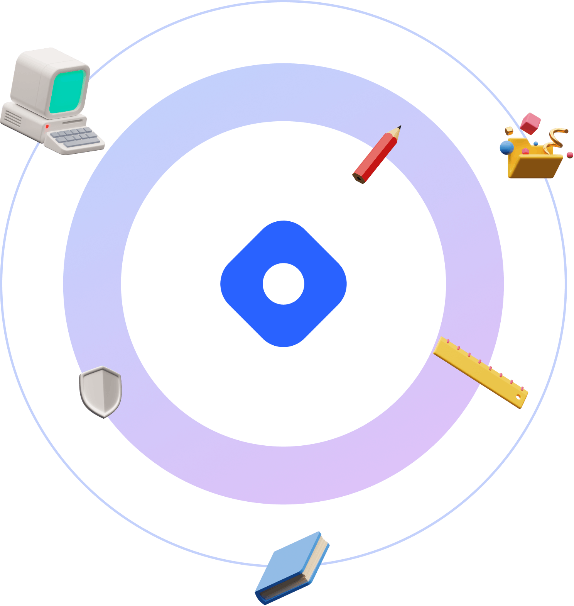

Home for tech writers and readers
The hassle-free blogging platform for engineers, thought-leaders, and the dev community!
Blog on a custom domain, own your content and share your ideas with the world. 
OWN YOUR CONTENT
No Ads. No Paywall. No Kidding.
Blog on your personal domain
Map your custom domain in just seconds. Serve your blog over HTTPS with no extra configuration. Get a high performance, secure, and fully-optimized dev blog that delights your readers.
Instantly find your audience
Every time you write an article,
Hashnode publishes it
on your domain and shares it with the dev community members on
the homepage. The readers are directed to your website to read
and interact with your content.
No annoying
ads/pop-ups
Knowledge sharing on Hashnode is and will always be completely free. Because we value the relationship between you and your readers, we won't show ads or pop-ups on your articles.
KEY FEATURES
Everything you need to start blogging as a developer!
Automatic GitHub Backup
Every time you publish an article on your tech blog, a markdown version of the post is pushed to your private GitHub repo as a backup.
Write in Markdown
Write your content in a distraction-free Markdown editor with proper syntax highlighting and see live previews instantly. Embed images, code snippets, tweets, and much more.
Map a custom domain
Bring your custom domain, and get up and running within minutes. We issue, and renew SSL cert for you automatically.
Superfast Next.js Powered Tech Blogs
Hashnode blogs are powered by Next.js, and are served via Vercel's world class CDN.
TESTIMONIALS
Don't just take our word for it, trust the community!
"I wanted to use my own domain with Hashnode and was prepared for all the hassle…and then - literally just one click and it was done! So easy, so convenient. Go Hashnode!"
 Simon Holdorf
Simon Holdorf
Full-Stack Engineer at SAP, Cloud Advocate - AWS Certified
"I've decided to make a huge leap and migrate my developer blog to Hashnode ! I'm really impressed with what they've accomplished in this short amount of time! I'm happy to join this community and I can't wait to share more of my learnings on AWS with you!"
AWS Cloud Consultant & AWS APN Ambassador at CloudNation
"After using Gastby, Ghost, Jekyll and Wordpress I'm going to use Hashnode, I wished to have known this amazing project months ago."
 Rafael Corrêa Gomes
Rafael Corrêa Gomes
Tecnology Director at Le Site
"I am killing the blog off my personal site and going full on Hashnode. Reasons: - Personal Domain - Free Analytics - Free Newsletter - SEO built in - Constantly pushing new features - Community is amazing!"
Software Engineer at Better.com
"Hashnode is super developer-friendly. I like it much better than Medium. Being able to write blogs solely using markdown and auto backup with GitHub is awesome! Goodbye, Medium."
 Qiusheng Wu
Qiusheng Wu
Assistant Professor at the University of Tennessee
"100 days ago, I published my first blog post on a new and unfamiliar platform called Hashnode. Today, publishing articles on Hashnode is a routine, a hobby, a great joy."
Solutions Engineer at PayPal

"It's amazing to see how fast devs go from 0 to Blog under a domain they own on Hashnode 🤯. It reminds me a lot of what Substack did for journalists."
Guillermo Rauch, Guillermo Rauch
Join the community
FROM THE COMMUNITY
Featured articles today
Introduction In this article, I want to compare the performance of two different web frameworks for Rust and Go. Both frameworks are very similar in their design (all are inspired by Express.js) and b…

Engin Diri
4 mins read
We live in a world where everything from applications to websites use exposes API to communicate with backend servers. Therefore, REST API plays an important role in the system and it is crucial to ta…

June Dang
8 mins read
If you're reading this, you're probably curious about computer vision or just starting out. You've come to the right place. In this tutorial, we'll learn to blur images using OpenCV and Python. This i…

Jeremy Morgan
4 mins readThe realm of AI is characterized by a plethora of techniques used to train models over the past few years. Machine Learning is revolutionizing the way we interact with technology and enabling new leve…

Jessica Anna James
5 mins readI. Introduction Data wrangling is the process of cleaning, transforming, and preparing raw data for analysis. Therefore, it is a critical step in the data analysis pipeline to ensure that the output i…

Maria Lupova
6 mins read
A few years ago, there was a point in my career when I was a senior developer with a decent salary. I was working on an interesting project and doing pretty well. At some point, I started to feel burn…
Paweł Dąbrowski
12 mins read"Just started out on Hashnode about 1 month ago, and I'm already at 14,000 page views. Really impressed with how much visibility I've gotten there!"
James Q Quick, Developer Advocate at PlanetScale
Join the community
FOCUS ON WRITING, WHILE WE DO THE REST
Features that make tech blogging 10x better
Superfast Next.js Powered Blogs
Hashnode blogs are powered by Next.js, and are served via Vercel's word class CDN.
Own your data
You retain all the rights to your content. Export and download all your posts from your dashboard with a single click.
Customize Design using CSS
Modify the appearance of your developer blog using our Custom CSS feature. Change the font family, font size, primary link colors, and more.
Free built-in newsletter service
Enable a newsletter service with the click of a button, and let your readers easily subscribe to your developer blog.
Built-in Analytics
Powerful analytics to track the number of views, likes, and comments, and analyze the performance of your articles over a period of time.
Article Series
Series is a great way to organize your content. It helps you easily group a series of articles related to a single topic.
Drafts
Share your drafts with your friends to get some early feedback before you hit the publish button.
HTTPS by default
It doesn't matter if you are using our free subdomain or a custom one. We provide SSL certificates for free for all the blogs.
Native GitHub Integration
Publish and backup articles directly on a private or public GitHub repo - enabling you to always have control over your content.
Unlimited Staff Users
Invite your editorial team and let multiple authors publish articles on the same blog.
NEW ✨ ONBOARD YOUR EDITORIAL TEAM